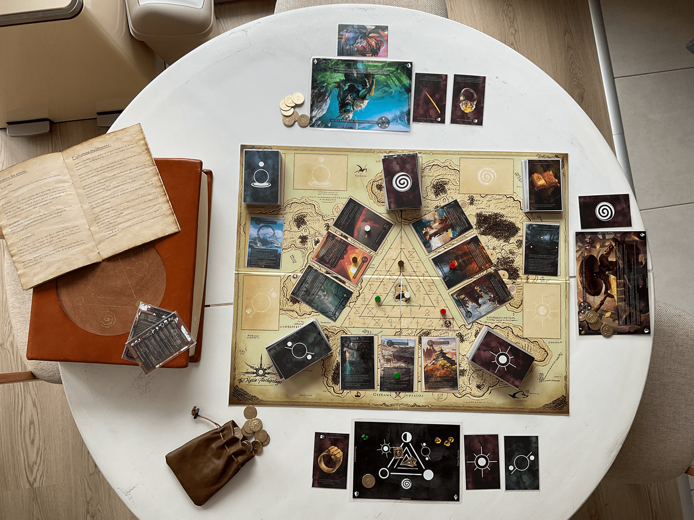
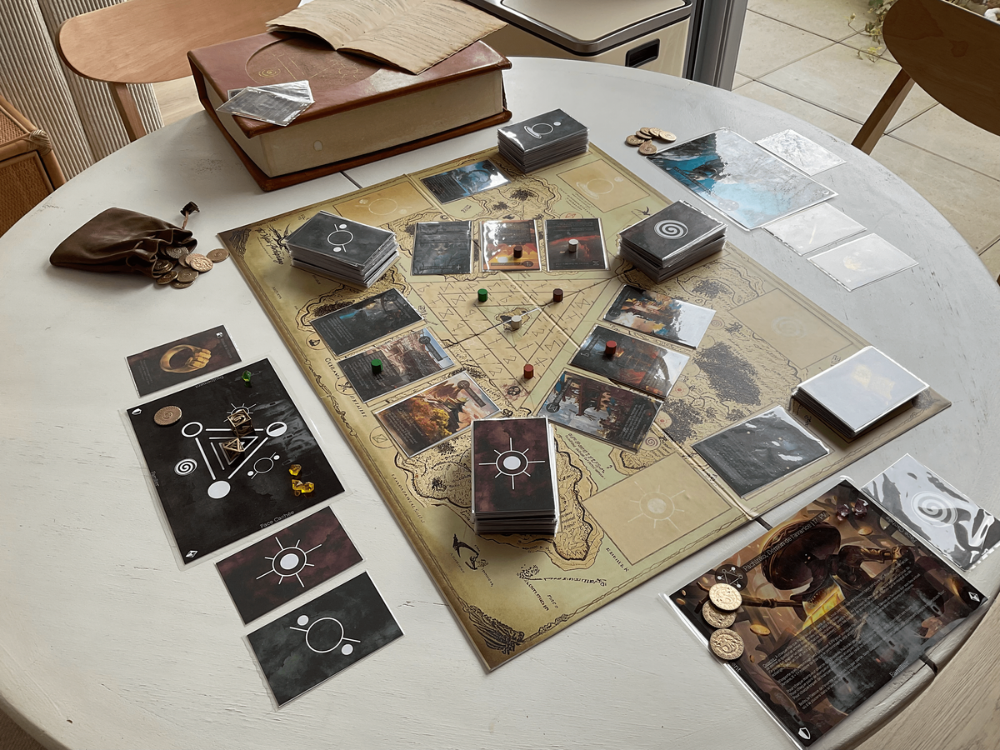
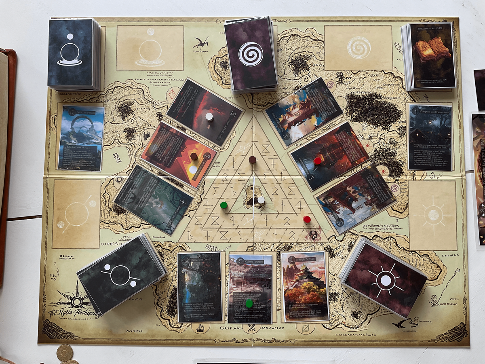
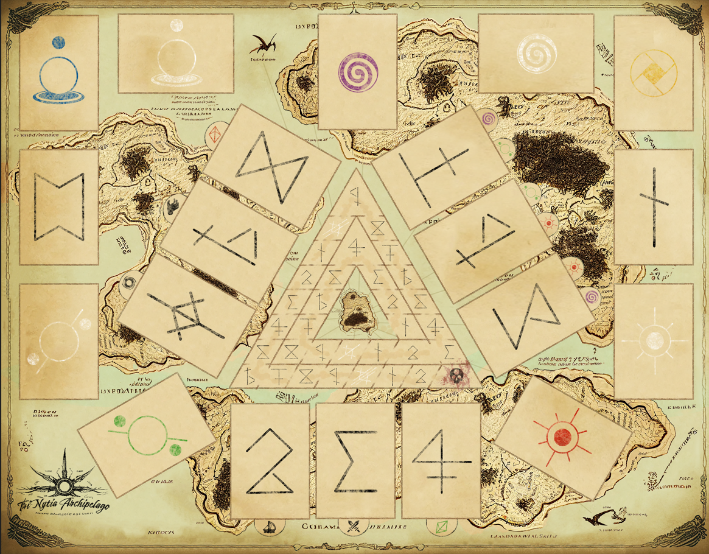
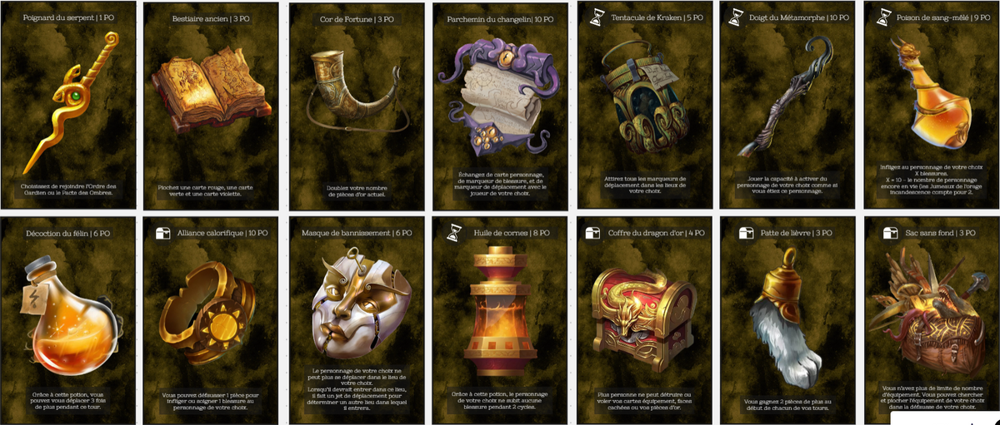

Incarnez un membre de l’Ordre des Gardiens, du Pacte des Ombres ou une Légende du cercle. Pour l’emporter il vous faudra faire preuve d’opportunisme, d’ingéniosité et par-dessus tout d’esprit d’équipe. Au début de la partie l’identité de chaque joueur est secrète. Vous devrez donc déterminer qui sont vos alliés et vos ennemis afin de mettre en place la stratégie qui vous fera gagner !
En résumé, pour réaliser seul le Tri’Nytia, j’ai travaillé sur le Game Design, l’Equilibrage, la Confection des cartes, de la boite, du plateau (Photoshop, Impression, Plastification) et le World Building.



Le plateau de jeu
Ce projet est inspiré des mécaniques principales du Shadow Hunter.
Les principales modifications que je désirais apporter à cette expérience de base concernaient la complexité, la rejouabilité, le jeu d’équipe, l’impact des décisions des joueuses / joueurs, et le fait de laisser moins de place à la chance et plus à la stratégie.

Les cartes

Pour atteindre mes objectifs j’ai créé :
Les cartes faces cachées, qui ajoutent de la stratégie et de la surprise.
Les cartes arcanes, qui dynamisent le jeu en permettant aux joueuses / joueurs d’intervenir en urgence pendant un tour adverse.
Les cartes événements, qui viennent bouleverser le jeu en impactant tous les joueurs et joueuses pour le reste de la partie.
L’échange de carte entre joueurs, qui augmente l’impact de la cohésion de groupe.
Un système de défense avec des points d’armures à acquérir.
Un système de mort active, pour que les joueurs éliminés continuent à s’amuser.
Une variété de plus de 60 personnages et plus de 400 cartes sorts, équipement, familier etc.
Le Lore. Disséminé sur toutes les cartes, il rend chaque partie unique, les joueurs en apprennent un peu plus sur l’univers de Tri’Nytia.